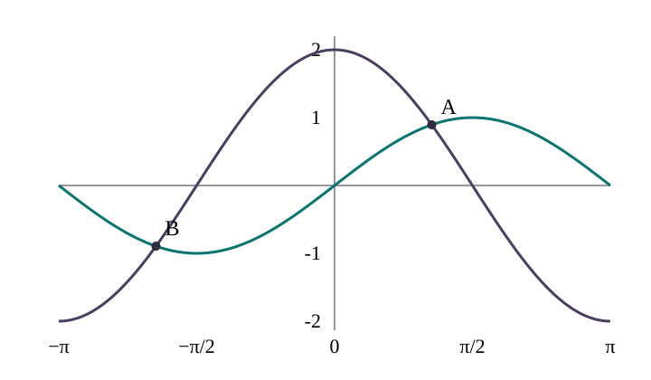

An integer is a whole number, positive, zero or negative. The integer n lists each repeated tangent solution.
The principal value is the one angle returned by inverse tangent, strictly between −90° and 90°, or −π/2 and π/2 radians.
Before dividing by cosine, test cosine = 0 in the original equation. In the sine/cosine equations below it would leave a nonzero sine term, so it gives no lost solution.
Keep all original denominators nonzero. A reciprocal 1/tan θ excludes tan θ = 0; tangent itself requires cos θ ≠ 0. In the fractional quadratic example, tan x + 1 must also be nonzero.
Write exact roots into inverse tangent and round only the final angle. A cube root is the number which gives the original value when multiplied by itself three times.
Period means the amount added before a graph repeats. Tangent has period or radians. Sine and cosine repeat after .
For , the principal value is . The general solution is , where is an integer.
Unlike sine and cosine, tangent can take every real value. If a quadratic gives two real tangent values, both must be used. There is no “reject because it is outside −1 to 1” rule.
If an inner angle is , solve for first, then undo the change to find .
The four-step method for tan = k
Divide or rearrange until only remains.
Find the principal value with inverse tangent.
Add repeatedly, or add in radians.
Keep only values inside the stated interval.
Worked example 1
Solve for .
Divide by : .
.
Principal value: .
Add 180°: .
Add 180° again: . The next value is outside the interval.
Answer: .
Key ideas
Tangent repeats every 180° or π radians. Add or subtract whole periods, then retain every angle in the question’s interval.
For a positive tangent square, take both signs. For a quadratic, solve each tangent root.
Tangent has no restriction to [−1,1], but it is undefined where cosine is zero. Keep all original denominator restrictions.
For a changed inner angle, change the interval first and undo the substitution only after finding every inner-angle solution.
More tan = k examples
Worked example 2
Given , solve for .
Subtract : .
Rearrange: .
.
Add 180°: . Both are in range.
Worked example 3
When the first part has already reduced the equation to , the principal value is , and the second solution is .
Worked example 4 in radians
Solve for .
.
Add : .
.
Rearranging to tan squared and tan cubed
Worked example 5
Solve for .
Divide by 2: .
Take both square roots: .
Positive root gives .
Negative root has principal value ; add 180° to get .
.
Worked example 6
Solve for .
Multiply by : .
.
.
Method: tan squared
Rearrange to . If , there is no real solution.
Take both roots: .
Solve each root with inverse tangent.
Add 180° until every value in the interval has been listed. For and , there are usually four values.
Worked example 7
Solve for .
, so .
Positive root: .
Negative root: principal ; add 180° twice to obtain .
.
Worked example 8
Solve for . The two roots are . Thus .
Quadratics in tan
Worked example 9
Solve for .
Factor: .
So .
The positive root gives .
The negative root gives principal ; add 180° to get .
.
Worked example 10 in radians
Solve for .
Cross-multiply: .
Rearrange: .
.
Keep values in : .
Phase shifts and multi-angle tangent
Worked example 11
Solve for the smallest two positive in radians.
Let . Then .
.
Undo the substitution: .
Try integers: , .
Worked example 12
Solve for .
Set , so .
Principal value ; the other is .
Divide by 2: .
Curves that meet
Worked example 13
If and meet in the first quadrant, then . Hence .

Teal: y = sin x. Plum: y = 2 cos x. Horizontal labels are radians.
Worked example 14
Tangent repeats every . The matching third-quadrant point is . Then ; substitution into gives the same value.
Mixed forms
Worked example 15
For , find in when .
.
Let . The range becomes .
, which is in range.
Return to .
Worked example 16
If an earlier part gives for , then . The values and are excluded by the open interval, so the only solution is .
Check your choice
Your turn
A tangent solution is known in radians. How far away is its next periodic copy?
Your turn
When tan²z is a positive number, how many signs are needed after taking square roots?
Practice
Try each one, then compare with the visible numbered solution.